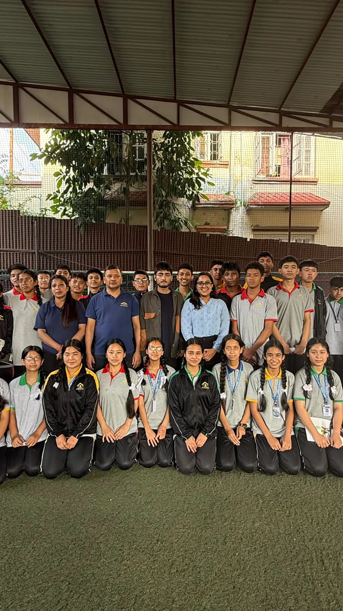
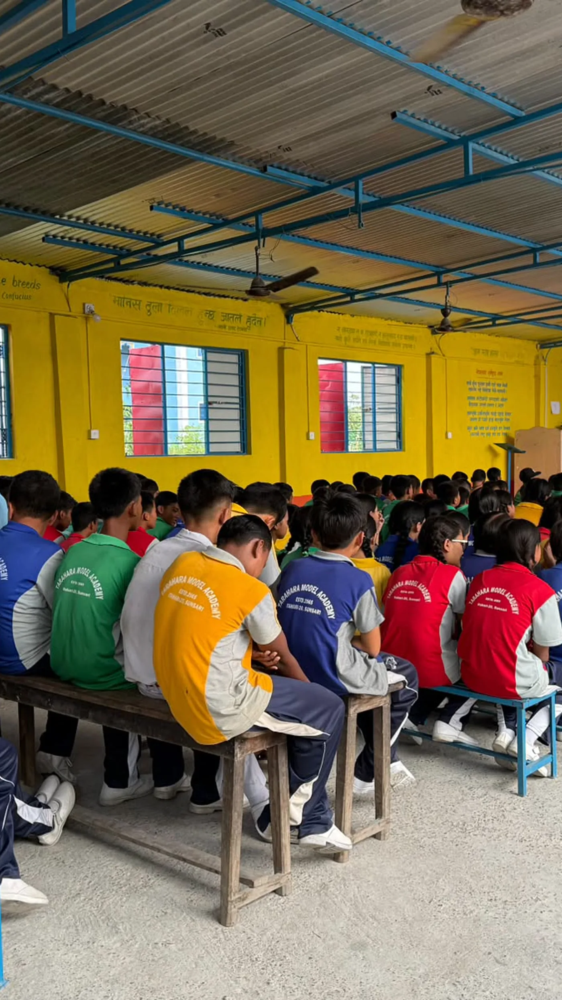
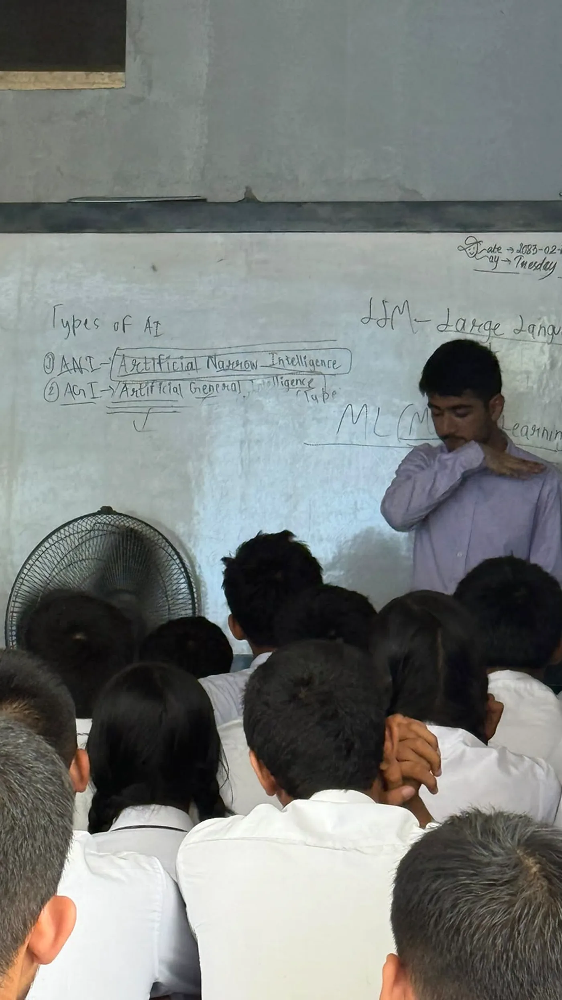
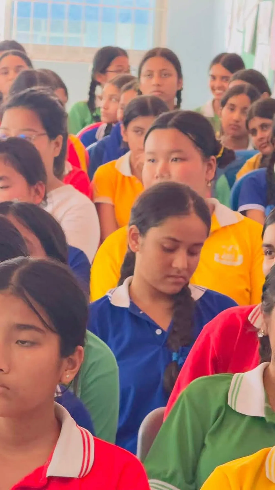
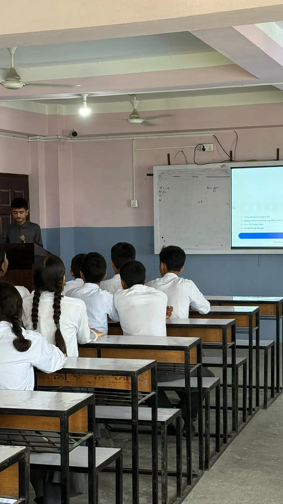
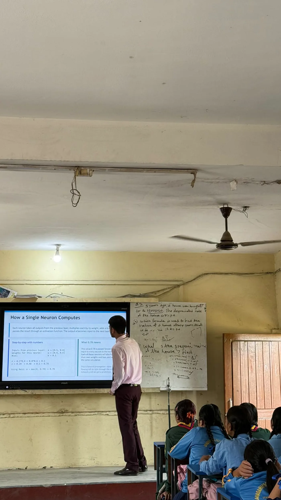
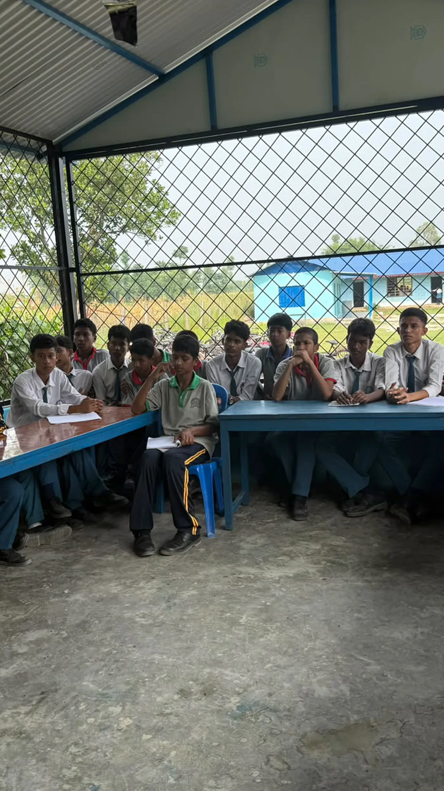
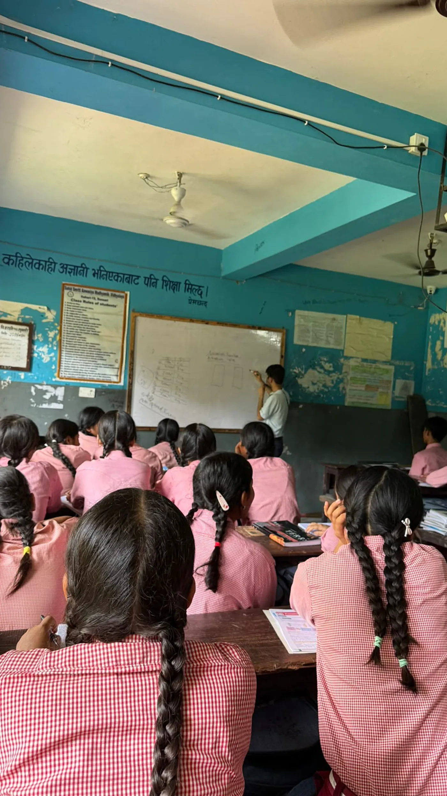
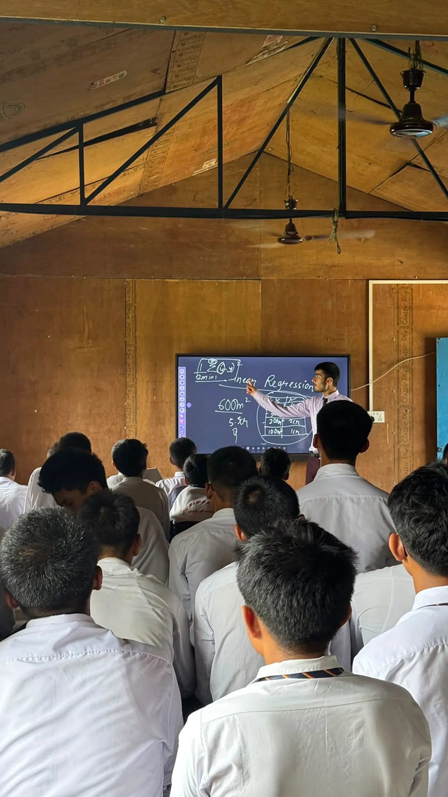

01
The smallest algorithm
Linear regression, small enough to work through on paper. Students watch a model learn before they hear the word model.
Day one
Scroll to build it
Nobody teaches that part. So students hear about AI every day and never find out what is behind it.
Schools reached of our next target of 30
United States: Code.org State of AI and CS Education 2025, share of public high schools offering foundational computer science. Nepal: AISCliteracy, arXiv:2506.23321, schools rated low on providing AI education. The two studies measure different things, so the Nepal side is shown without a fabricated number.
Linear regression, small enough to work through on paper. Students watch a model learn before they hear the word model.
Weights, error, and the loop that makes a prediction improve. This is where it stops looking like magic.
The mechanism running inside every chatbot they already use, in real depth rather than hand waved.
Public speaking, so students can teach what they learned to their families, their friends and their own classrooms.









Speaking improves through repetition, and we are only in a school for a few days. Every student gets a free tool that listens to them and answers back in plain language.
We cover our own costs. You provide a room and students. That is the whole arrangement.
@declare_now